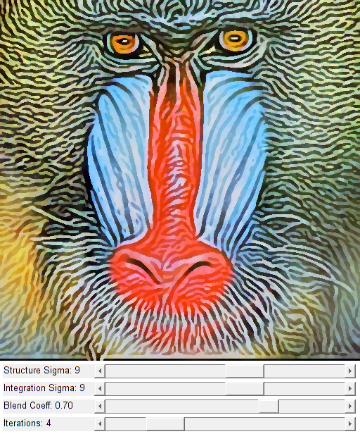

Coherence-Enhancing Filtering
Inspired by:
- Joachim Weickert, "Coherence-Enhancing Shock Filters" http://www.mia.uni-saarland.de/Publications/weickert-dagm03.pdf
Sources:
function varargout = coherence_demo_gui(im) % load color image if nargin < 1 im = fullfile(mexopencv.root(), 'test', 'img001.jpg'); img = cv.imread(im, 'Color',true); elseif ischar(im) img = cv.imread(im, 'Color',true); else img = im; end assert(size(img,3) == 3, 'RGB image expected'); % create the UI h = buildGUI(img); if nargout > 0, varargout{1} = h; end end function img = coherence_filter(img, sigma, str_sigma, blend, niter) %COHERENCE_FILTER Coherence-enhancing filter for i=1:niter gray = cv.cvtColor(img, 'RGB2GRAY'); % dominant eigenvector eigen = cv.cornerEigenValsAndVecs(gray, 'BlockSize',str_sigma); x = eigen(:,:,3); % x1 eigenvector of lambda_1 y = eigen(:,:,4); % y1 eigenvector of lambda_1 % second order derivatives opts = {'KSize',sigma, 'DDepth','single'}; gxx = cv.Sobel(gray, 'XOrder',2, 'YOrder',0, opts{:}); gyy = cv.Sobel(gray, 'XOrder',0, 'YOrder',2, opts{:}); gxy = cv.Sobel(gray, 'XOrder',1, 'YOrder',1, opts{:}); gvv = x.*x.*gxx + 2*x.*y.*gxy + y.*y.*gyy; % dilation/erosion ero = cv.erode(img); dil = cv.dilate(img); if true img1 = cv.copyTo(dil, 'Dest',ero, 'Mask',gvv<0); else mask = repmat(gvv<0, [1 1 size(img,3)]); img1 = ero; img1(mask) = dil(mask); end % blend img = cv.addWeighted(img,1-blend, img1,blend, 0); end end function onChange(~,~,h) %ONCHANGE Event handler for UI controls % retrieve current values from UI controls niter = round(get(h.slid(1), 'Value')); blend = get(h.slid(2), 'Value'); sigma = round(get(h.slid(3), 'Value')); str_sigma = round(get(h.slid(4), 'Value')); set(h.txt(1), 'String',sprintf('Iterations: %d', niter)); set(h.txt(2), 'String',sprintf('Blend Coeff: %.2f', blend)); set(h.txt(3), 'String',sprintf('Integration Sigma: %d', sigma)); set(h.txt(4), 'String',sprintf('Structure Sigma: %d', str_sigma)); % apply coherence-enhancing filter out = coherence_filter(h.src, sigma*2+1, str_sigma*2+1, blend, niter); % show result set(h.img, 'CData',out); drawnow; end function h = buildGUI(img) %BUILDGUI Creates the UI % parameters sz = size(img); sz(2) = max(sz(2), 300); % minimum figure width % build the user interface (no resizing to keep it simple) h = struct(); h.src = img; h.fig = figure('Name','Coherence', ... 'NumberTitle','off', 'Menubar','none', 'Resize','off', ... 'Position',[200 200 sz(2) sz(1)+105-1]); if ~mexopencv.isOctave() %HACK: not implemented in Octave movegui(h.fig, 'center'); end h.ax = axes('Parent',h.fig, 'Units','pixels', 'Position',[1 105 sz(2) sz(1)]); if ~mexopencv.isOctave() h.img = imshow(img, 'Parent',h.ax); else %HACK: https://savannah.gnu.org/bugs/index.php?45473 axes(h.ax); h.img = imshow(img); end h.txt(1) = uicontrol('Parent',h.fig, 'Style','text', ... 'FontSize',10, 'HorizontalAlignment','left', ... 'Position',[5 5 130 20], 'String','Iterations:'); h.txt(2) = uicontrol('Parent',h.fig, 'Style','text', ... 'FontSize',10, 'HorizontalAlignment','left', ... 'Position',[5 30 130 20], 'String','Blend Coef:'); h.txt(3) = uicontrol('Parent',h.fig, 'Style','text', ... 'FontSize',10, 'HorizontalAlignment','left', ... 'Position',[5 55 130 20], 'String','Integration Sigma:'); h.txt(4) = uicontrol('Parent',h.fig, 'Style','text', ... 'FontSize',10, 'HorizontalAlignment','left', ... 'Position',[5 80 130 20], 'String','Structure Sigma:'); h.slid(1) = uicontrol('Parent',h.fig, 'Style','slider', ... 'Value',4, 'Min',0, 'Max',20, 'SliderStep',[1 4]./(20-0), ... 'Position',[135 5 sz(2)-135-5 20]); h.slid(2) = uicontrol('Parent',h.fig, 'Style','slider', ... 'Value',0.7, 'Min',0, 'Max',1, 'SliderStep',[0.01 0.1], ... 'Position',[135 30 sz(2)-135-5 20]); h.slid(3) = uicontrol('Parent',h.fig, 'Style','slider', ... 'Value',9, 'Min',0, 'Max',15, 'SliderStep',[1 3]./(15-0), ... 'Position',[135 55 sz(2)-135-5 20]); h.slid(4) = uicontrol('Parent',h.fig, 'Style','slider', ... 'Value',9, 'Min',0, 'Max',15, 'SliderStep',[1 3]./(15-0), ... 'Position',[135 80 sz(2)-135-5 20]); % hook event handlers, and trigger default start set(h.slid, 'Callback',{@onChange,h}, ... 'Interruptible','off', 'BusyAction','cancel'); onChange([],[],h); end